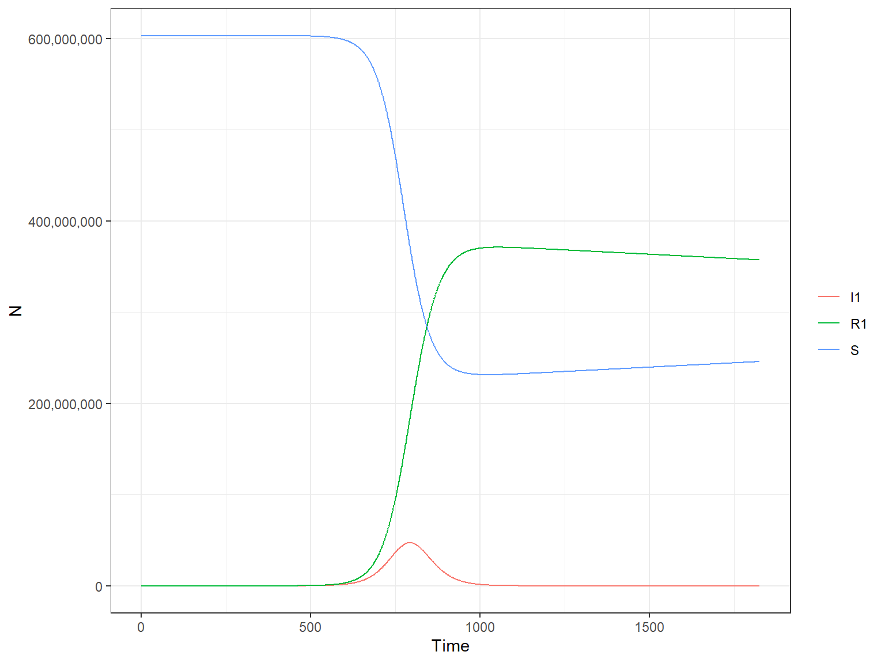
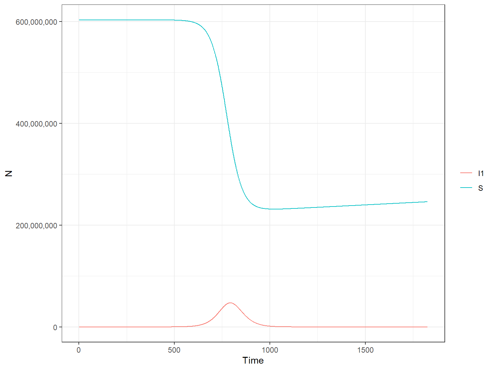
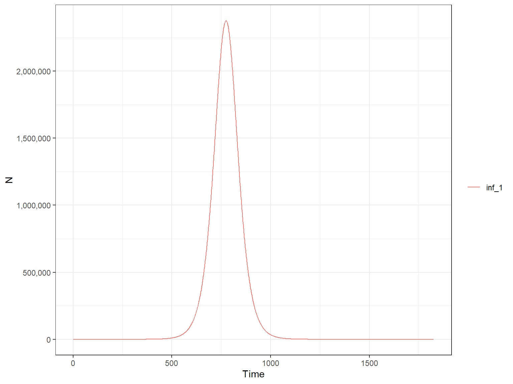
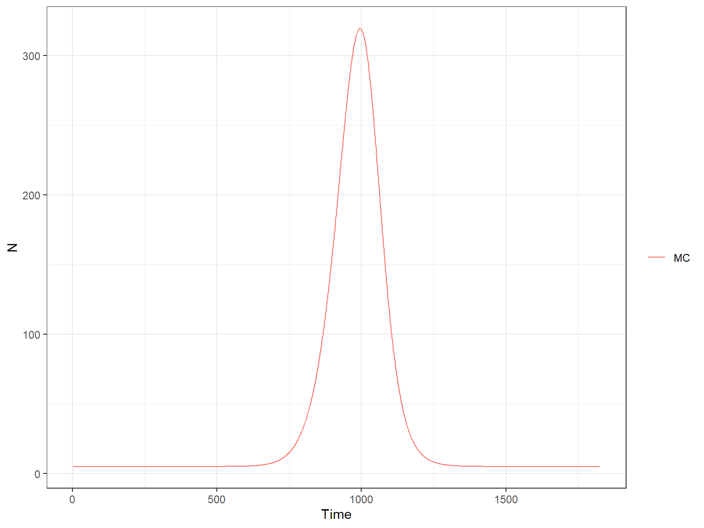
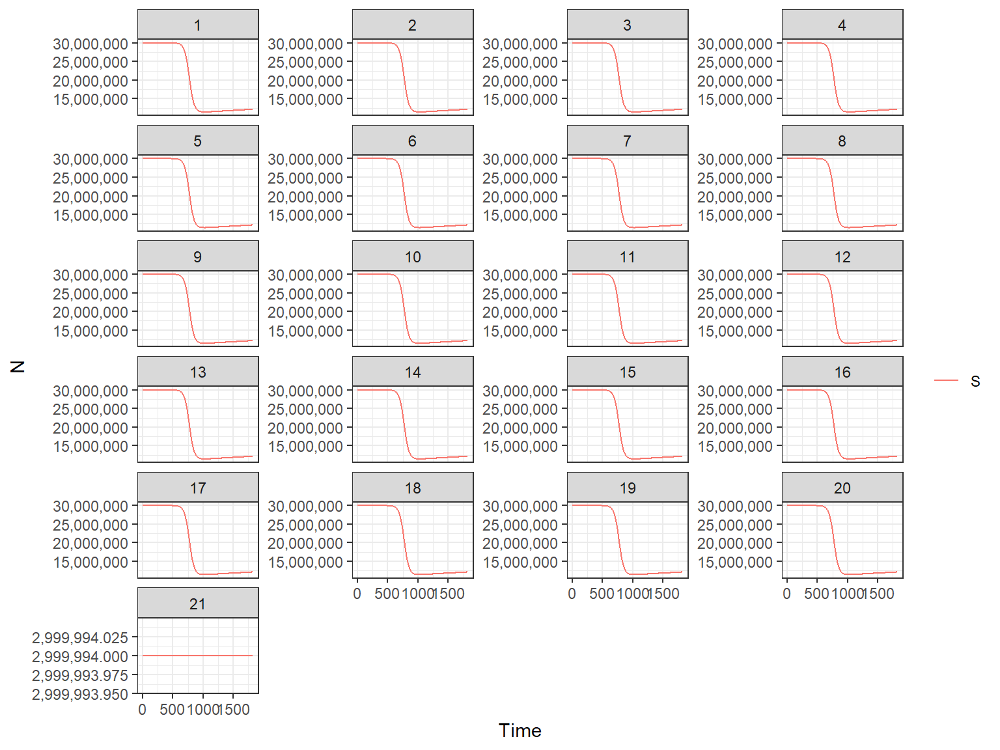

Run a base model
Lorenzo Cattarino
2020-06-19
Source:vignettes/deterministic_base.Rmd
deterministic_base.RmdRunning the base model
Here we consider a deterministic model without seasonality and interventions. By defaut the model uses Brazil demographics (annual per capita human birth and death rates). This will likeley be modifed in future versions. We run the deterministic version of the model with run_deterministic_model():
library(ZikaModel) r1 <- run_deterministic_model(time_period = 365 * 5)
The returned object is a Zika_model_simulation object, which is a list of two objects:
-
output- model output -
parameters- model parameters
Zika_model_simulation objects can be plotted as follows:
plot(r1, type = "H")

This will plot all the human compartments of the model, namely:
-
S- Susceptibles -
I1- Exposed and Infectious -
R1- Recovered
The argument type is used to specify which part of the model we want to plot, the human (H) or the mosquito (M) part. We can select which compartment to plot with the var_select argument. Arguments passed to var_select must be one of the variables in the above plot.

Alternatively one of the following variables can be selected:
-
Ntotal- total size of the human population
-
inf_1- daily incidence of infections -
MC- daily incidence of microcepahly cases -
inf_1_w- weekly incidence of infections per 1000 individuals -
MC_w- weekly incidence of microcepahly cases per 1000 individuals
First, we plot the weekly number of infections:
plot(r1, type = "H", var_select = "inf_1")

and then the weekly number of microcephaly cases:
plot(r1, type = "H", var_select = "MC")

By default the plot function uses internally the format_output_H() or the format_output_M() function, depending on the value of the type argument. We show here the use of the format_output_H function to extract the S compartment:
S_output <- format_output_H(r1, var_select = "S") head(S_output) #> t compartment y #> 1 1 S 602999874 #> 2 2 S 602999874 #> 3 3 S 602999874 #> 4 4 S 602999874 #> 5 5 S 602999874 #> 6 6 S 602999874
By using the keep argument we can extract the value of these variables for each of the 21 patches or each of the two vaccine status (1 = non vaccinated, 2 = vaccinated) of the model. By setting keep equal to patch, the output has an additional column for the patch:
S_output <- format_output_H(r1, var_select = "S", keep = "patch") head(S_output) #> t patch compartment y #> 1 1 1 S 29999994 #> 2 2 1 S 29999994 #> 3 3 1 S 29999994 #> 4 4 1 S 29999994 #> 5 5 1 S 29999994 #> 6 6 1 S 29999994
By specifing the same arguments var_select and keep arguments in the plot function we plot the S compartment by patch:
plot(r1, type = "H", var_select = "S", keep = "patch")

We can also plot the mosquito compartments of the model using the same plot function. To do that we modify the value of the type argument.
plot(r1, type = "M")

This plots the following mosquito compartments:
-
Mwt_S- Susceptible wild type adult -
Mwt_E1- Exposed wild type in incubation stage 1 -
Mwt_E2- Exposed wild type in incubation stage 2 -
Mwt_I1- Infectious wild type -
Mwb_S- Susceptible wolbachia-infected adult -
Mwb_E1- Exposed wolbachia-infected in incubation stage 1 -
Mwb_E2- Exposed wolbachia-infected in incubation stage 2 -
Mwb_I1- Infectious wolbachia-infected
We can select which of the above mosquito compartments to plot with the var_select argument (and type = "M"). Or we can choose among the following variables:
-
Lwt- Wild type mosquito larvae
-
Lwb- Wolbachia-infectedmosquito larvae -
Kc- Mosquito larvae carrying capacity -
eip- Extrinsic incubation period -
Delta- Adult mosquito mortality rate -
R0t_1- Time varying reproduction number -
FOI1- Force of infection
Using the argument keep we can choose whether to plot the above variables as summary across all patches (default) or by patch (keep = "patch").
Now, as a sanity check, we plot the variables which are directly modified by seasonal forcing, namely Kc, eip and Delta and the time-varying reproduction number (\(R_t\)). We can make use of the function format_output_M(), which allows to format the model outputs. format_output_M() by default extracts the mean value of Kc, eip and Delta across patches. Once we have extracted the model output we can write our own plotting code:
library(ggplot2) #> Warning: package 'ggplot2' was built under R version 3.6.3 library(patchwork) Kc <- format_output_M(r1, var_select = "Kc") Kc_p <- ggplot(Kc, aes(x = t, y = y)) + geom_line(color = 'royalblue', size = 0.5) + scale_x_continuous("Time") + scale_y_continuous("Mean across patches") + ggtitle("Mosquito larvae carrying capacity") + theme_bw() eip <- format_output_M(r1, var_select = "eip") eip_p <- ggplot(eip, aes(x = t, y = y)) + geom_line(color = 'royalblue', size = 0.5) + scale_x_continuous("Time") + scale_y_continuous("Mean across patches") + ggtitle("Extrinsic Incubation Period") + theme_bw() delta <- format_output_M(r1, var_select = "Delta") delta_p <- ggplot(delta, aes(x = t, y = y)) + geom_line(color = 'royalblue', size = 0.5) + scale_x_continuous("Time") + scale_y_continuous("Mean across patches") + ggtitle("Adult mosquito daily mortality rate") + theme_bw() Rt <- format_output_M(r1, var_select = "R0t_1") Rt_p <- ggplot(Rt, aes(x = t, y = y)) + geom_line(color = 'royalblue', size = 0.5) + scale_x_continuous("Time") + scale_y_continuous("Mean across patches") + ggtitle("Time-varying ZIKV reprodution number") + theme_bw() all <- Kc_p + eip_p + delta_p + Rt_p all
 A expected the mean value of
A expected the mean value of Kc, eip and Delta does no change throughout the simulation when seasonality is turned off.